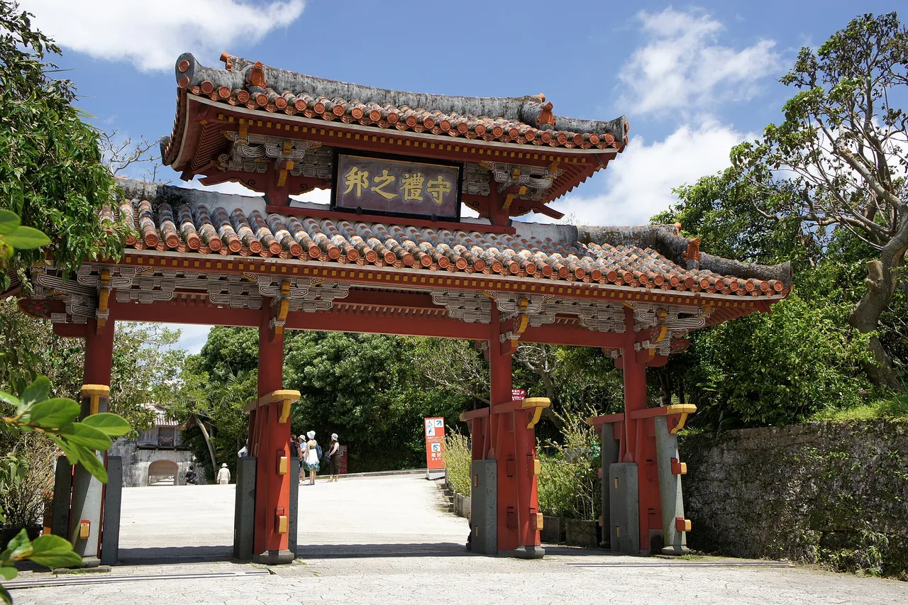

▶ KYŪSHŪ / OKINAWA 沖縄
沖縄旅遊指南（日語學習者適用）
簡而言之
沖縄是日本的亞熱帶島嶼群，地理位置比起東京更靠近台灣，承載著以那霸與首里城為中心的琉球王國歷史遺產。這裡以珊瑚礁、白沙海灘和獨特的在地料理（如苦瓜炒什錦與沖縄蕎麥麵）聞名，吸引旅客前往美麗海水族館，以及石垣島、宮古島等離島探索。
📍 首選景點：Shuri Castle (Shurijo) / 首里城 · 🥢 必吃美食：Goya champuru (ゴーヤーチャンプルー) · 資料來源
日本亞熱帶南方——白沙海灘、珊瑚礁、獨特的琉球文化，以及出了名悠閒的生活步調。

🍜 美食 ▰▰▰▰▰ 🏯 文化 ▰▱▱▱▱ 🏙 城市 ▰▰▰▰▰ 🚄 交通 ▰▰▱▱▱ 🌿 自然 ▰▰▰▰▰
🥢 必吃：Goya champuru (ゴーヤーチャンプルー) · 📍 必看：Shuri Castle (Shurijo) / 首里城
沖縄是一串島嶼群，地理位置比起東京更靠近台灣，氛圍截然不同：氣候更溫暖、步調更悠閒，並擁有琉球王國的獨特歷史。來這裡享受海灘與潛水，留下來品嚐美食，感受「nankuru naisa」（船到橋頭自然直）的從容精神。
交通方式
那霸是本島的門戶。本島真的需要租車——那霸單軌電車以外的大眾運輸相當有限。前往離島（石垣島、宮古島）可搭飛機或渡輪，抵達後再租車或租機車。
景點推薦
★ Shuri Castle (Shurijo) / 首里城★ Okinawa Churaumi Aquarium / 沖縄美ら海水族館★ Sefa-Utaki / 斎場御嶽💎 Yachimun no Sato pottery village (やちむんの里), Yomitan💎 Nakijin Castle Ruins / 今帰仁城跡
- Shuri Castle — 那霸琉球王國的復原王城。
- Churaumi Aquarium — 世界頂級水族館之一，館內飼養鯨鯊。
- 慶良間諸島 — 從那霸搭短程船即可抵達，海水清澈、珊瑚礁美麗。
- 石垣島 & 宮古島 — 擁有最多明信片級海灘的離島。
美食推薦
★ Goya champuru (ゴーヤーチャンプルー)★ Okinawa soba / Soki soba (沖縄そば・ソーキそば)★ Rafute (ラフテー)💎 Taco rice (タコライス)💎 Blue Seal beni-imo & shikuwasa ice cream (ブルーシール)💎 Mimigaa & yushi-dofu (ミミガー・ゆし豆腐)
沖縄料理自成一格：苦瓜炒什錦（gōyā champurū）、沖縄蕎麥麵、塔可飯，以及紫地瓜（beni-imo）甜點。當地居民是全球最長壽的族群之一。
學習日語
海がきれいですね。
Umi ga kirei desu ne. — 「海好美啊，不是嗎？」（在這裡你一定會發自內心這樣說）
交通相關
ゆいレールで首里城まで行けますか？
Yui Rēru de Shuri-jō made ikemasu ka? — 請問可以搭 Yui Rail 到首里城嗎？
在地表達
ゴーヤーチャンプルーをひとつお願いします。
Gōyā chanpurū o hitotsu onegaishimasu. — 請給我一份苦瓜炒什錦。
資料來源：Visit Okinawa Japan（官方觀光網站） ·
japan-guide.com — 沖縄。
資訊已依官方觀光來源核實；文中觀點為本站自身意見。